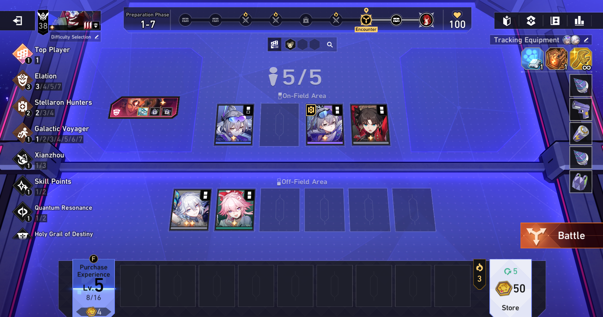
A design read of the mode in Honkai: Star Rail. What interested me was how it changes the combat loop and still feels like the same game.
When I played Currency Wars, the thing that stood out was how much the mode changes Honkai: Star Rail’s loop without feeling like a different game. Three parts kept pulling at me: the on-field and off-field split, the way an auto-battler’s complexity is handled, and the pacing across three planes. This write-up is about why those choices might exist, what problems they are trying to solve, and what they give up.
The sections move from combat structure, to what the player has to hold in their head, to the pacing of a whole run. I only explain a mechanic further when that detail is needed for the argument. Where no developer statement exists, a claim about purpose is my reading, not a confirmed intent. The screenshots are my own captures from the version I was playing.
The on-field / off-field split felt natural almost immediately. At first it looked like a front row and a back row. After more runs I think it is solving a deeper conflict. An auto-battler wants a large composition space. Honkai: Star Rail combat works best with a small number of characters the player actually controls.
Keeping the mode at four characters would preserve the base combat, and it would leave much less room for large synergies, specialist roles, and random recruitment. Putting up to ten full characters into the normal battle layer would add more than six extra bodies. It would add turn order, resources, targeting, survivability, and kit interactions, all at once. Automating all ten is closer to a conventional auto-battler, and then the mode gives up too much of what makes the combat recognisably Honkai: Star Rail: skill choices, Ultimate timing, and target selection.
The problem is not “fit more characters into the fight.” It is how to grow the composition without letting direct-control complexity grow at the same rate.
| Approach | What it preserves | What I think breaks |
|---|---|---|
| Keep only 4 units | Base combat stays intact. | Too little room for the large synergy and role structure an auto-battler wants. |
| Control all 10 | Every unit keeps full player agency. | Battle length, information, and interaction count expand together. Micro can overwhelm the draft. |
| Automate all 10 | Closest to a conventional auto-battler. | The mode loses too much of what makes combat recognisably Honkai: Star Rail. |
| 4 on-field + 6 off-field | A large composition, with direct control still capped. | Some off-field agency has to be given up. |
The 4+6 split separates “contributing to the composition” from “taking part in normal combat.” Up to ten characters can contribute to the build. Only the four on-field characters behave like they are on the ordinary battlefield. Off-field characters contribute through automated Character Empowerment, and they are taken out of normal enemy targeting and survivability management. The new decisions move toward recruitment, Bonds, role allocation, and resources, instead of multiplying ordinary combat by two and a half.
If on-field and off-field were only technical containers, the decision could collapse into “put the four strongest fighters in front.” Position-dependent Empowerment stops that. An on-field slot is scarce: giving one unit its full on-field value can deny that slot to another unit that also depends on it. A limit that exists to control complexity is turned back into a team-building problem.
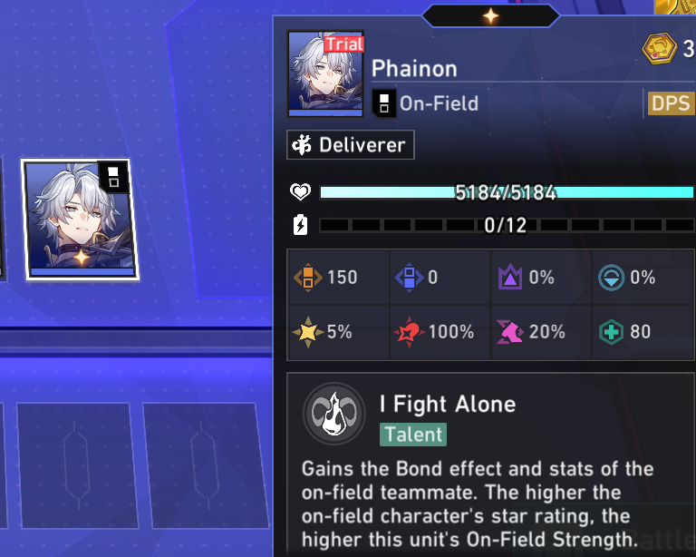
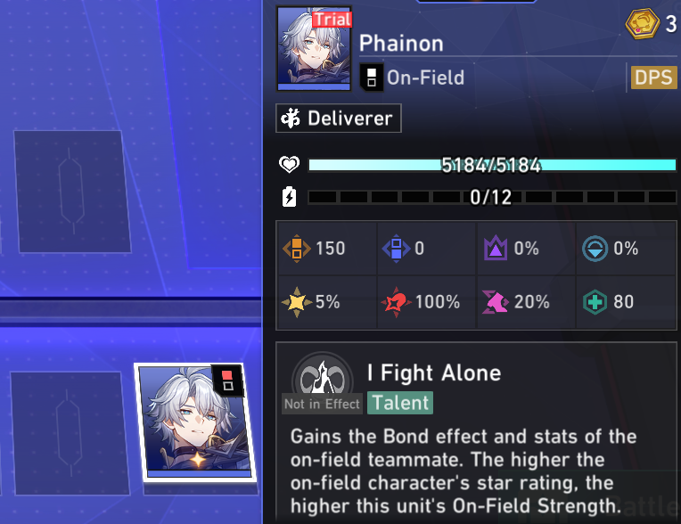
The same unit gains or loses Currency Wars Empowerment depending on position.
The new macro layer does not erase the base game’s four-slot positioning. Preservation units still draw more aggro. An edge seat can reduce how many allies are caught by adjacent attacks. An Energy-hungry unit can sit beside the high-aggro character and trade safety for Energy from being hit. Currency Wars asks the player to learn a lot of new systems, and it does not make existing knowledge worthless.
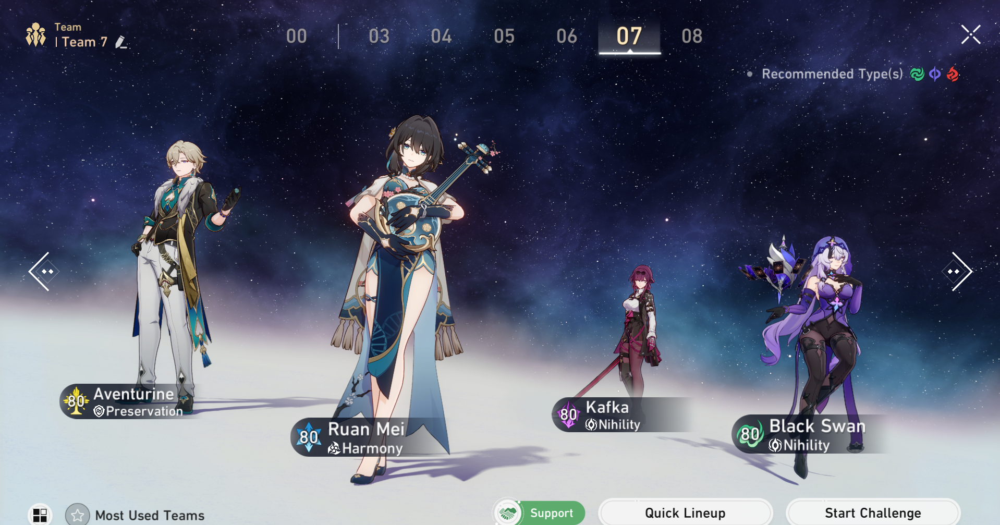
The trade-off is the same thing that makes the solution scale. Off-field characters do not add the same amount of input, because the player does not control them directly. A ten-character team can feel like four characters with six extra systems running behind them. Automation lowers input complexity and can raise causal complexity: several backline effects can trigger together, and it is not always obvious which character caused which interaction. That can be true even for a veteran, because most players will not have every character.
I still think this is one of the more mature compromises in the mode. Currency Wars does not choose between “Honkai: Star Rail combat” and “auto-battler scale.” It puts them on different layers. The loss of some off-field agency is real, and that loss is also what lets the larger composition exist without breaking the base combat loop.
Currency Wars reminded me of Teamfight Tactics. What I like about the auto-battler is controlled randomness. I cannot choose what I am offered, so I have to make something from what is actually there. That stays interesting only if there are enough units, interactions, and pivots to think about. The same complexity is what makes the genre hard to enter.
If the possibility space gets too small, controlled randomness turns into a script: see X, build Y. That is easier to learn, and the adaptation problem disappears with it. A giant tutorial is a weak substitute. Most of that information is hard to retain when the player is not using it to make a real choice. Leaving the problem to third-party sites creates another kind of friction: leave the game, search, remember, come back, and compare that information to the current board.
What Currency Wars does instead is more interesting to me. It keeps much of the underlying complexity, and it moves part of the memory and lookup cost out of the player’s head and into the interface. The possibility space is still there. The player has to hold less of it in working memory at the same time.
| Approach | What the player has to do | Result |
|---|---|---|
| External guide / second screen | Leave the game, search, remember, then compare with the current state. | Detailed information, and the decision flow is interrupted. |
| Static in-game comp image | Less searching. The player still has to remember when each target appears. | Better, and still mostly “read first, remember later.” |
| Contextual tracking | Relevant units and equipment are marked when they actually appear. | Recall becomes recognition. The complexity stays. The cost of using it drops. |
What I like about the Strategy Compendium is that it does not stop at a finished team. I can choose a strategy and carry that information into the run. When a relevant character appears in recruitment, or a tracked item appears in an equipment choice, the game marks it directly. Remembering an entire target composition becomes a recognition task: does the option in front of me match the plan? The strategic system is still complex. The working-memory burden is lower.
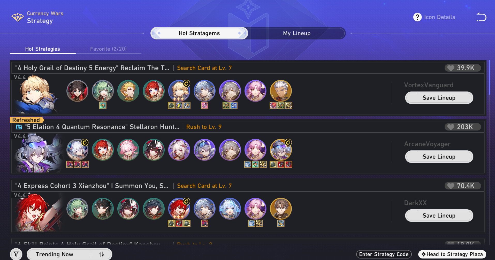
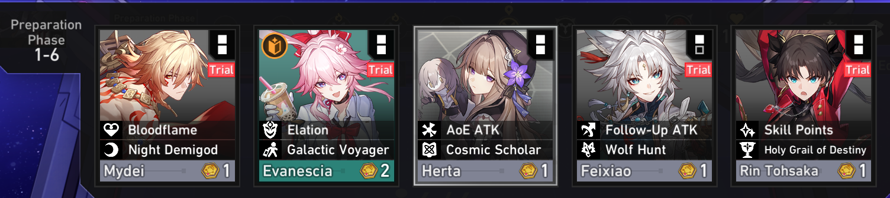
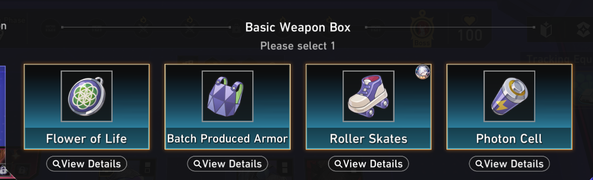
The timing of the information matters more than simply giving more of it. Ten possible interactions explained before a run are abstract, and they are easy to forget. A recommendation that appears when the unit enters the shop, or when the item enters a four-way choice, can be used immediately. The player can participate first, and later move from “the game told me to pick this” toward “I understand why this is being recommended.”
Building the support into the game also drops the assumption that the player has a second screen. PC, mobile, and console can reach the same assistance. Guide-version reminders, outdated-strategy warnings, and equipment tracking can be maintained as the mode changes. For a permanent live-service mode, that learning layer is more reliable than leaving the basic experience entirely to external tools.
The risk is that a recommendation gets read as the correct way. Once the interface highlights a unit or an item, a newer player may keep forcing the opening plan after the run has started offering better reasons to pivot, because leaving the highlighted advice feels unsafe. A system meant to help with randomness, and to ease entry, can weaken one of the genre’s important skills: adapting away from the original plan. If strong community compositions also spread efficiently through the official interface, players may converge on a small meta faster and experiment less.
A useful test of the system is not whether it can carry a beginner to a strong final board. It is whether the player eventually moves from “I buy this because it is highlighted” to “I know why it is highlighted, and I know when to ignore it.” The best version outsources memory. It does not outsource judgement. I came back to the same preference while building Core Shift: show the relevant part at the moment of the decision, and leave the call to the player.
Across several runs I kept feeling that Plane 2 was often more dangerous than Plane 3. I checked the in-game difficulty information, expecting the step from Plane 2 to 3 to be smaller than the step from 1 to 2. It was not. Enemy modifiers keep rising at a stable rate. That made the feeling more interesting, because the question becomes the relative speed of enemy growth and build growth.
Plane 3 is not secretly weaker. At the difficulty I was on, enemy modifiers rise from Plane 1 (ATK +32%, HP +251%, SPD +26%) to Plane 2 (+35%, +322%, +32%) and again to Plane 3 (+38%, +406%, +38%). Absolute enemy pressure is still increasing. If Plane 3 can still feel more manageable, the player-side curve has to be part of the explanation.
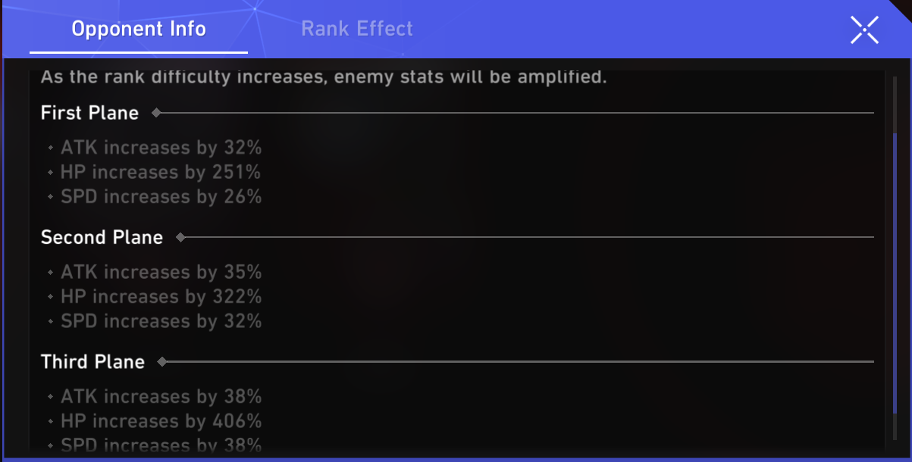
Enemy scaling also does not ease off in Plane 3 in any obvious way. The increases are not perfectly identical, and the relative growth stays very similar across both transitions: ATK +2.27% / +2.22%, HP +20.23% / +19.91%, and SPD +4.76% / +4.55%. If Plane 3 feels easier, it is more likely because the build is maturing faster than enemy strength, rather than because enemy scaling slowed down.
| Stat | Plane 1 | Plane 2 | Plane 3 | 1 → 2 | 2 → 3 |
|---|---|---|---|---|---|
| ATK | 1.32× | 1.35× | 1.38× | +2.27% | +2.22% |
| HP | 3.51× | 4.22× | 5.06× | +20.23% | +19.91% |
| SPD | 1.26× | 1.32× | 1.38× | +4.76% | +4.55% |
Relative growth is calculated from the total multipliers. HP +251% is 3.51× base HP. The values come from the difficulty screen above.
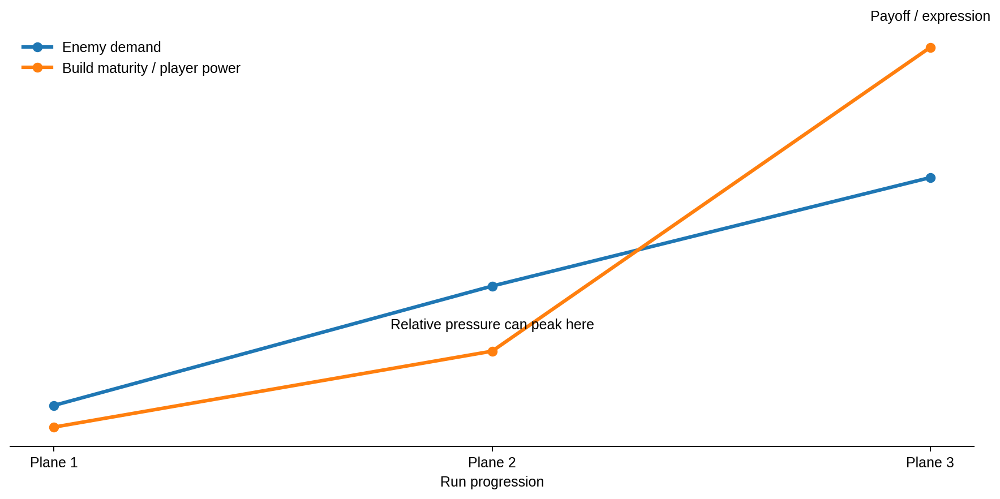
A roguelike power curve is not satisfying just because every number gets larger. The player needs to feel that their decisions mattered. If enemy demand always rises in the same proportion as player power, then every new unit, upgrade, Bond, and item only keeps the player in place. The final plane can be “harder” on paper, and the build never gets a moment to feel complete.
| Stage | What I think the player is asking | Why the pressure belongs here |
|---|---|---|
| Plane 1 · Formation | What can this run become? | Incomplete builds are tolerated, so the player can read random outcomes and keep pivots open. |
| Plane 2 · Stabilisation | Does this build actually work now? | A deadline for turning future potential into enough present power. |
| Plane 3 · Payoff | What can the completed build do? | Earlier investment becomes visible, while stronger enemy stats keep endgame pressure. |
Resources have future value. Gold can be held. A unit may be one copy away from an upgrade. A Bond may be one recruit away from a breakpoint. Spending now can close off something later, and saving too long can be the thing that loses the run. If serious pressure arrived only at the final boss, there would be a strong reason to save everything until the end. Plane 2 restores that balance by acting as a decision deadline. By then the player has to stop preserving every option and turn some future value into immediate strength. It forces a judgement about when waiting has become more costly than spending.
It is also a mid-run check. If the build is weak, Plane 2 exposes it while there is still time to adapt. The run gets a curve from formation, to a crisis that asks the build to stabilise, to a payoff, instead of a simple easy-medium-hard line.
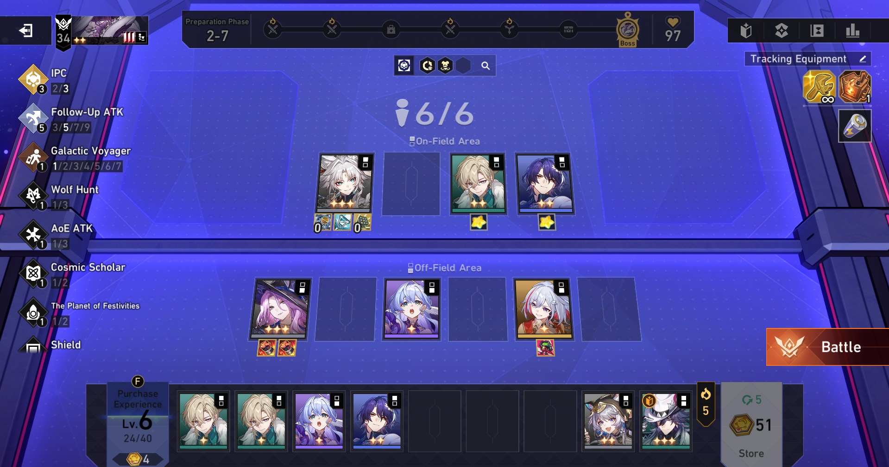
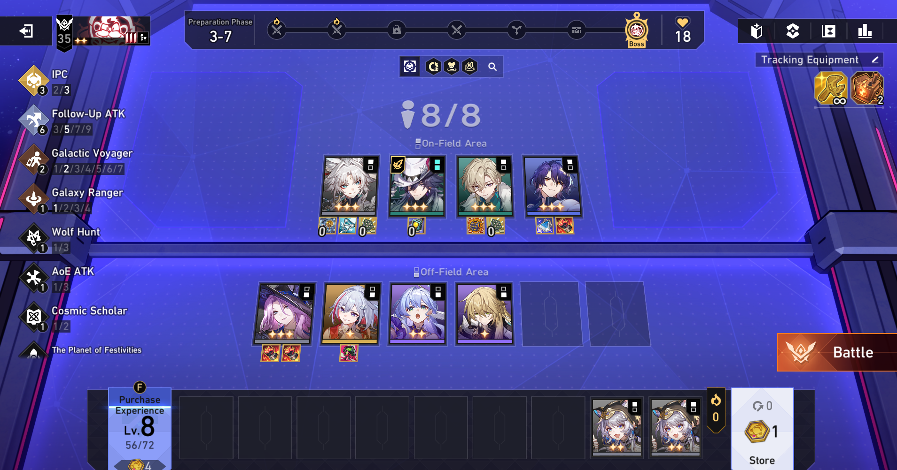
I can see two ways this fails. A mid-run check only feels fair if the player has been given enough tools and chances to stabilise. Bad luck can leave a visible problem with no reasonable way to answer it. And once the run crosses that middle threshold, strong compounding can turn Plane 3 into a victory lap and make the final boss feel too easy. With enough practice, the whole mode can also become a checklist: approximate level, star, and economy thresholds, and a tense decision turns into a routine. These are real, and they are not enough to break the mode for me.
I do not think perceived difficulty has to rise on a straight line. For Currency Wars, it is more fun to me if pressure peaks when the build is least stable. The middle asks whether the system actually works. The end gives the completed system room to show what the earlier decisions created. The balance problem is making the Plane 2 check feel fair, without letting Plane 3 become so predictable and so simple that winning stops feeling like something the earlier decisions earned.
Taken together, what interests me about Currency Wars is not that it contains an auto-battler shop, Bonds, or roguelike progression. Those are ingredients. The design work is in resolving the three conflicts that appear when those ingredients are mixed into Honkai: Star Rail: large compositions against manageable control, strategic complexity against the friction of getting started, and sustained challenge against the payoff of a completed build.
None of the solutions are clean. The on-field / off-field structure makes a ten-unit composition possible, and some off-field agency is lost. The Strategy Compendium reduces memory and lookup cost, and it can turn guidance into an anchor. The three-plane curve can create a strong mid-run crisis and a late payoff, and it is sensitive to random outcomes and to snowballing. Each solution is a compromise that was thought through. That is why these are the parts I most wanted to take apart.
Unless noted otherwise, the Currency Wars screenshots are my own captures from the version I was playing.
Related Core Shift · a tactics demo I designed, built around the same preference: show the cost before the player commits.
Questions soniclinxin@gmail.com · LinkedIn